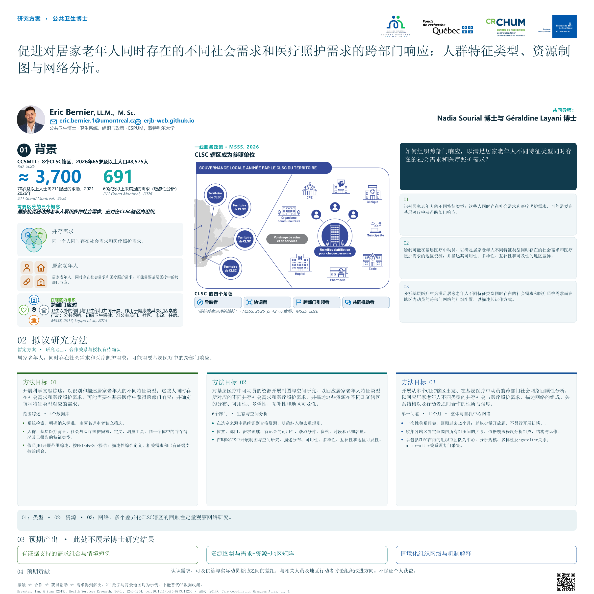
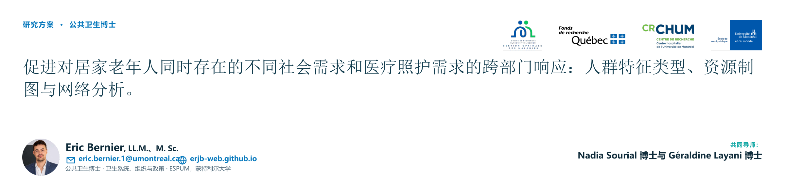
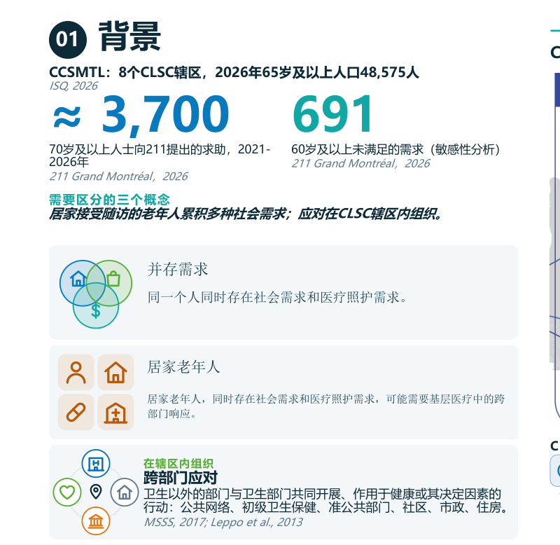
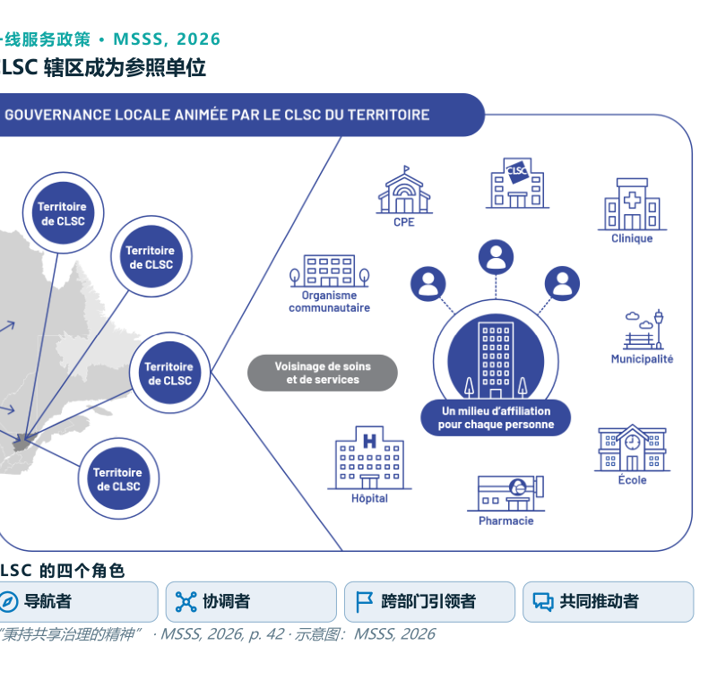
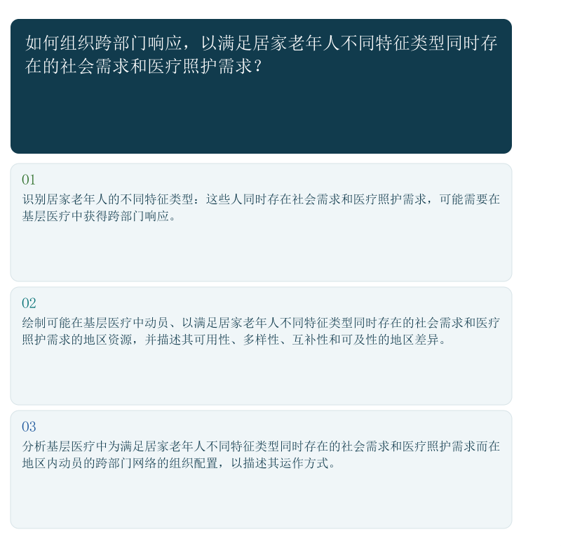
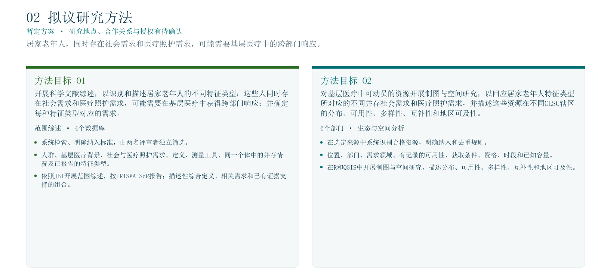
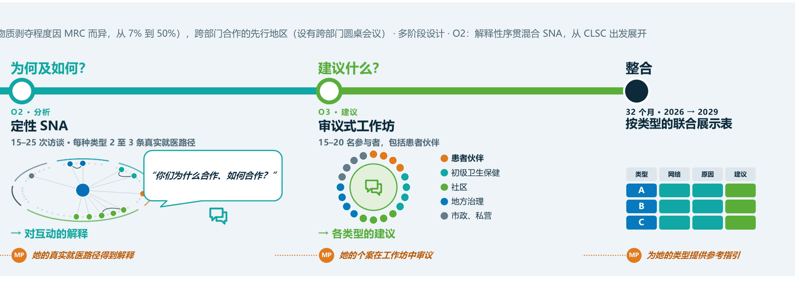
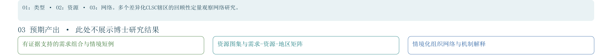

引言
大家好，我叫 Eric Bernier。我是蒙特利尔大学公共卫生学院的公共卫生博士研究生，由 Nadia Sourial 博士和 Géraldine Layani 博士共同指导。
我的课题题目是：在初级卫生保健中组织对复杂且并存的社会需求的跨部门应对。与所照护的不同患者类型相适应的网络配置。
这一版本分四个部分介绍海报：背景、方法、预期结果，以及影响与成果。
研究方案 · 公共卫生博士
与所照护的不同患者类型相适应的网络配置








由您设备的语音逐节朗读。完整文字见下方。
大家好，我叫 Eric Bernier。我是蒙特利尔大学公共卫生学院的公共卫生博士研究生，由 Nadia Sourial 博士和 Géraldine Layani 博士共同指导。
我的课题题目是：在初级卫生保健中组织对复杂且并存的社会需求的跨部门应对。与所照护的不同患者类型相适应的网络配置。
这一版本分四个部分介绍海报：背景、方法、预期结果，以及影响与成果。
第一个发现：社会需求会层层叠加。在加拿大的初级卫生保健中，每两名患者中就有一人报告至少一项社会需求 (Kosowan et al., 2025)。在魁北克，2023 年有 19% 的家庭面临食物不安全，而 2018 年为 14%；在住房支出至少占收入一半的家庭中，这一比例为 40%：住房与吃饭只能二选一 (Institut de la statistique du Québec, 2026)。
海报区分了三个概念。并存，指同时存在至少两项社会需求：这是纳入标准。复杂性，指慢性病、残障、心理健康问题和社会脆弱性的累积：会加以描述，但不作为纳入要求。跨部门应对，指卫生以外的其他部门与卫生部门一起，针对健康或其决定因素所采取的行动，参与方包括：CLSC（地方社区服务中心）、医院、GMF、药房、社区组织、市政府、学校、CPE 以及私营部门。换句话说，并存是用来计数的，复杂性是用来描述的，而跨部门应对是在一个辖区内组织起来的。
海报中央是一幅示意图，取自魁北克卫生与社会服务部于 2026 年发布的一线服务政策，展示了由所在辖区的 CLSC 主导的地方治理。左侧是一幅按 CLSC 辖区划分的魁北克地图。右侧，围绕着一个作为每个人归属机构的 CLSC，分布着一家 CPE、一家诊所、一个社区组织、市政府、医院、一家药房和一所学校：这就是照护与服务的邻里圈。CLSC 辖区成为参照单位，该政策赋予 CLSC 四个角色：导航者、协调者、跨部门引领者和共同推动者，秉持共享治理的精神。
为了便于理解这一逻辑，海报使用了一个虚构的例子：Protocole 女士，58 岁。她收到了驱逐通知，面临食物不安全，背有债务，并患有抑郁症，这构成了她的临床背景。谁来回应她？与谁一起？又由谁来协调？
这正是空白所在：CLSC 必须承担协调职责，但面对某一种需求组合，并没有任何依据说明应动员哪些合作伙伴、如何把他们联系起来，以及由谁来协调。人们了解的是服务规划，而不是围绕就医路径实际形成的网络。
由此提出研究问题：对于在初级卫生保健中接受照护、具有复杂且并存的社会需求的不同类型患者，跨部门应对是如何组织的？目标是：将每一种需求类型与一种合作伙伴配置及其协调者联系起来。
研究现场：Lanaudière 地区三个差异鲜明的 CLSC（地方社区服务中心）辖区。该地区是跨部门合作的先行者，设有跨部门圆桌会议。这些差异真实存在：在 Matawinie，物质剥夺影响一半人口，而在 Les Moulins 和 L'Assomption 仅为 7% (CISSS de Lanaudière, 2024)。研究设计包含多个阶段，以一条设有四个站点的地铁线路来呈现。
第一站，目标 1：有哪些类型？一项范围综述从已发表的研究出发，归纳出反复出现的需求类型，再将其转化为四到六个情境案例，即虚构的情境，并由六到八位相关人员加以验证。
第二站，目标 2：谁动员了谁？网络图谱的绘制从每个 CLSC 出发。CLSC 的多位一线人员和管理者填写问卷，并列出与其往来的对象；这些对象随后也会收到问卷，依此类推。问卷一方面涉及情境案例，即潜在网络；另一方面涉及过去十二个月的互动，即真实网络。因此，合作伙伴之间的联系是由合作伙伴本身申报的。
第三站，仍为目标 2：为什么，又如何？定性网络分析用来解释这些互动。十五到二十五次访谈以网络图为依据，提出诸如此类的问题：你们为什么合作，又是如何合作的？每种类型重建两到三条真实就医路径，由当事人以及曾陪伴他们的一线人员共同参与。
第四站，目标 3：应当提出什么建议？一场审议式工作坊汇集十五到二十人：患者伙伴，以及来自初级卫生保健、社区、地方治理、市政和私营部门的参与者。由此形成针对每种类型的建议。
终点站将所有内容整合进一张联合展示表，每种类型一行：网络、解释与建议。项目为期 32 个月，从 2026 年到 2029 年。
Protocole 女士走完了整条线路：她的类型在已发表的研究中被识别出来，她成为一个情境案例，她的真实就医路径得到解释，她的个案在工作坊中被审议，最终为她这一类型得出参考指引。
三个虚构的例子说明了我们对每个 CLSC（地方社区服务中心）的预期：自我中心网络会随类型而变化。在每幅图中，CLSC 位于中心；辖区内的机构排成一圈，并按部门分组；被 CLSC 动员的机构会被突出显示，并与之相连。
类型 A，以住房问题为主，起因是一份驱逐通知：CLSC 动员三个合作伙伴，即一个市政伙伴、一个社区组织和一个 GMF。它们彼此全部相连，由 CLSC 负责协调。
类型 B，即 Protocole 女士：住房、食物和债务。七个合作伙伴，仍然彼此相连，由 CLSC 负责协调。
类型 C：需求相同，另加抑郁症。十一个合作伙伴，但彼此联系很少：形成若干孤立的小群体，且没有指定的协调者。
五项假设引导分析，每项都有相应的测量方式。第一：动员的部门随类型而变化，以部门构成来测量。第二：存在一个共同的核心合作伙伴群，以及每种类型特有的外围伙伴。第三：合作伙伴越多，彼此之间的联系就越少，以网络规模和密度来测量。第四：根据指定的协调者来看，CLSC 是否发挥了导航者和协调者的作用？第五：在需求相同的情况下，性别是否会改变应对方式？比较情境案例的女性版本和男性版本。最后，由情境案例描述的潜在网络，与过去十二个月的真实网络之间，存在多大的差距？
本论文并不追求一个普适的理想网络，而是为每种类型提供参考指引。其成果惠及从个人到系统的各个层面。
对个人而言：获得与其需求组合相匹配的应对。对 CLSC（地方社区服务中心）及其合作伙伴而言：获得关于动员谁、如何相互联系以及由谁协调的参考指引。对一线服务政策而言：提供一个基线状态，以及围绕 CLSC 四个角色的建议。对研究而言：提出一个将需求类型与网络联系起来的假设，并测量潜在网络与真实网络之间的差距。研究结果将反馈给三个辖区，综述的研究方案已在 OSF 上发布，后续还将发表论文。
我很期待听到您的想法：评论、阅读推荐、引荐联系或方法上的改进建议。您可以写信至 eric.bernier.1@umontreal.ca，或使用本页上链接的表单。感谢您的聆听。
评论、阅读推荐、引荐联系、方法或概念上的改进思路：欢迎任何形式的贡献。